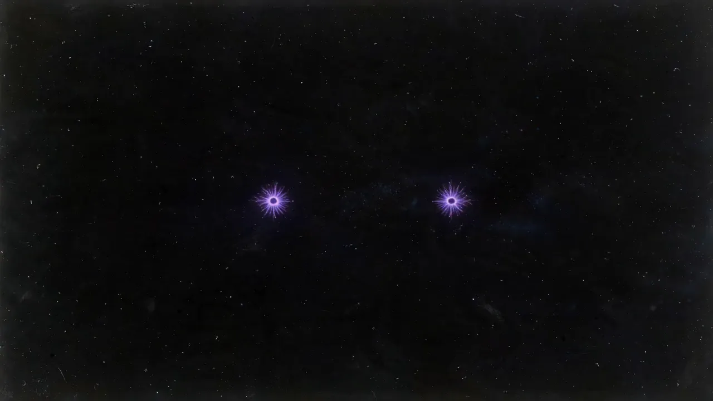
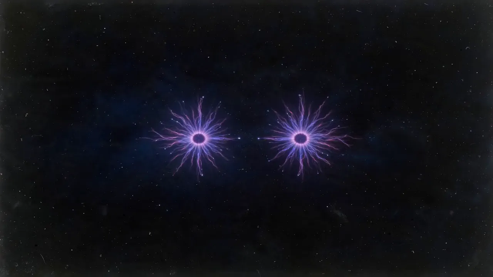
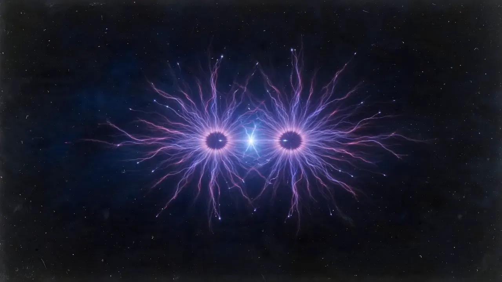
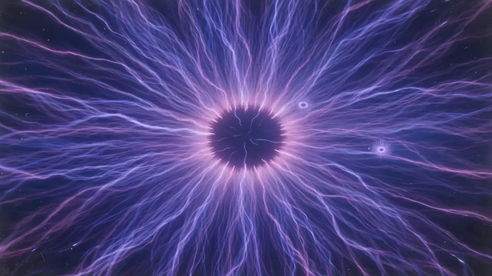
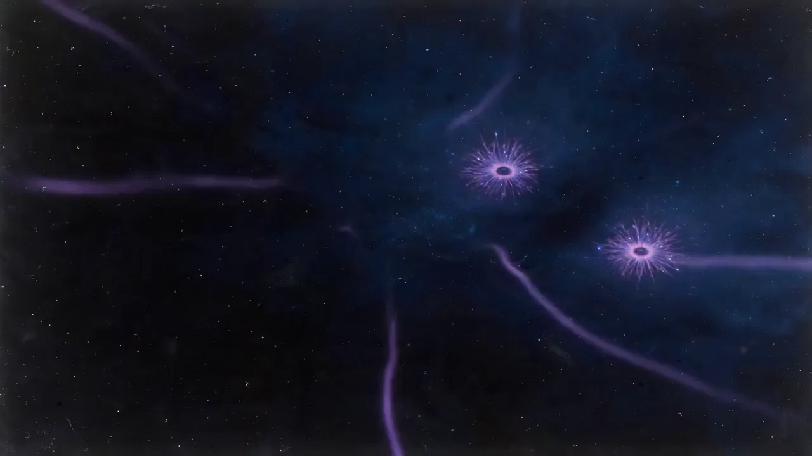

Culinara
Investment readiness
- $12M
- target ARR by year 3
- 4.2×
- CAC/LTV framework
- 25%
- target share in core segments





AURA Advisory · Venture Intelligence
Know more. Risk less. Product, growth and team architecture for seed and Series A startups.
Senior in-house growth operators from venture-backed startups across logistics, delivery, dating, fintech, payments and health-tech. We've owned the metrics we now come to fix.
84% of investors and founders end up picking between bad options. Most startups that fail, fail on something a plan could have caught.
Product, growth and team architecture connect founder execution with investor goals.
We start with unit economics, not media plans. If the LTV/CAC math doesn't work, we tell you before you spend a dollar.
Two or three channels, real tests, and what fails is killed fast. No spray-and-pray budgets.
Fast iteration across creatives, funnels and channels turns early signals into repeatable growth.
A base fee covers the team. The upside is a share of the incremental revenue we create.
Stage 1 delivers:Growth Audit deckKPI treeExperiment backlogLive CEO dashboard
AssessDesignBuildOptimize
Leadership due diligence, capability gaps, org design and a strategic hiring roadmap. Tools: Hogan, Gallup, Information Metabolism, ICF coaching, DACI/RACI.
Investment readiness
Growth & scale
Product growth
When you're unsure paid scale is viable. Stage 1, 2 to 3 weeks, fixed scope.
When you have signal and want to scale without burning cash. Stages 1 to 4, 6 months minimum, base fee plus revenue share.
When you need geo, channels or fundraising prep. Stage 5, 3 months, base fee plus outcome bonus.
You pay a base fee plus a % of incremental revenue, measured against a cohort baseline agreed before we start, with a minimum and maximum set upfront.
AURA Advisory · Know more. Risk less. · © 2026